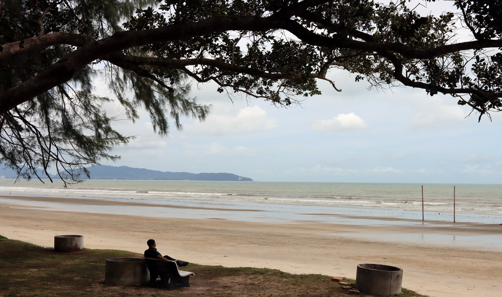

Tanjung Sepat Beach is one of the hidden gems along Selangor's western coastline. It is well known for its calm surroundings, fresh sea air, and spectacular sunset views over the Straits of Malacca.
Unlike crowded tourist beaches, this destination offers a peaceful atmosphere where visitors can relax, enjoy the scenery, capture memorable photographs, or simply spend quality time with family and friends.
Whether you are looking for a short weekend escape or a place to appreciate nature, Tanjung Sepat Beach provides a unique coastal experience that reflects the beauty of Malaysia's local seaside communities.
Discover what makes Tanjung Sepat Beach a peaceful coastal destination loved by both locals and visitors.
Enjoy breathtaking sunset views over the Straits of Malacca, creating the perfect backdrop for memorable evenings.
Relax beside the calm shoreline while enjoying fresh sea breezes and a quiet atmosphere away from the busy city.
Capture stunning coastal landscapes, colourful sunsets, fishing boats and unforgettable holiday memories.
A relaxing destination suitable for families, couples, students and anyone seeking a peaceful getaway.
Enjoy a peaceful stroll along the coastline while listening to the soothing sound of the waves.
Capture beautiful scenery, fishing boats and colourful sunsets with your friends and family.
Witness one of Selangor's most peaceful sunset experiences overlooking the Straits of Malacca.
Bring snacks, enjoy the fresh air and spend quality time with your loved ones.
Plan your visit with these useful details before exploring Tanjung Sepat Beach.
Tanjung Sepat, Kuala Langat District, Selangor, Malaysia.
Evening (5:00 PM – 7:30 PM)
Ideal for sunset viewing.
Free Entry
Open to the public.
Public parking is available near the beach area.
Use the map below to locate Tanjung Sepat Beach.